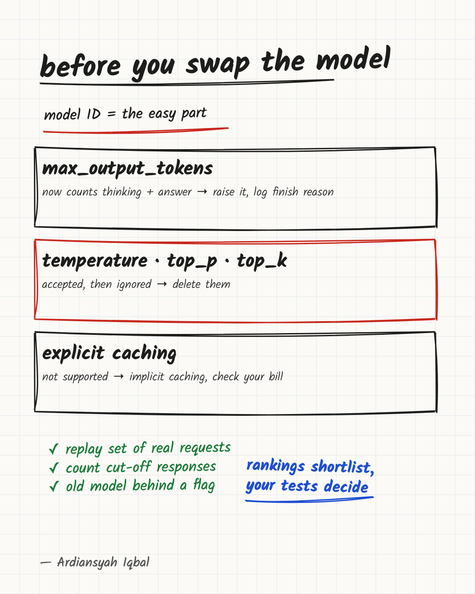

Gemini 4 Argon: The Model ID Is the Easy Part of Migrating
Google's own migration guide shows that output caps, ignored parameters and caching changed, so a model swap needs a regression test, not a benchmark table.

Google's API changelog
calls gemini-4-argon "our most capable model built for
complex coding, agentic, math, and science tasks." A ranking is the
obvious thing to look at first.
I think the more useful reading is Google's own migration guide. Its checklist includes updating the model ID. The other items are about things that will break or quietly change if you stop at the model ID: how many tokens a response may use, which parameters the model still honours, how caching works, and how long your HTTP client waits.
My view is that the guide is the better guide to what a release means for you. A benchmark tells you how a model behaves on someone else's tasks under someone else's settings. The migration guide tells you how it will behave inside your code. Teams that treat a new model as a config change will learn the difference in production. Teams that treat it as a dependency upgrade, with a regression suite and a rollback path, will not.
This article walks through what changed, why each change bites, and a short test you can run before you swap the model into anything that matters.
What the benchmarks can and cannot tell you
Start with the claim. In the launch post, which is about Argon's availability in the Gemini app and not the API, Google says Argon brings "major improvements in coding" and "frontier reasoning and improved performance across complex tasks" to the app. Those are app claims, not API claims. It talks about a coding interface on macOS, a mode where Gemini keeps working while you are away, and connections to more than 40 apps. That is a product announcement, and it is fine as one. It is not evidence that the model will do better on your codebase.
The numbers come from elsewhere. VentureBeat's coverage separates two kinds of result. It attributes a Vals Index ranking to Vals AI, with Argon first on Vals' GDP-weighted index as of results from October 12 (rankings move, so check the live leaderboard before you quote it), while on Artificial Analysis' index Argon scores 53, tied with GPT-6 Astra and Claude Fable 5.1 and below Claude Opus 5.5, Claude Sonnet 5.5 and Meta Muse Wonder Full. It describes the strongest results for Argon on other benchmarks as supplied by Google. Even in Google's own comparison, Opus 5.5 leads on Terminal-Bench, and the article notes that benchmark settings and reasoning configurations differ between models.
So the summary is mixed: first on Vals' GDP-weighted index in the October 12 results VentureBeat cited, tied with some models and behind others on Artificial Analysis' index, with the strongest numbers on other benchmarks coming from the vendor. A mixed picture is normal for frontier models, and it is why a ranking cannot decide your migration. The model that wins on average can lose on the one task your product depends on.
What you can check is behaviour under your own settings, and that is where the migration guide matters.
The output cap now includes thinking
Here is the change I would worry about first. In Google's Argon
guide, max_output_tokens "sets the total thinking and
output tokens for a response," and it is a hard limit: the response
stops once thinking and output together reach it.
The cap is a per-response total: thinking plus answer must fit in this much. (The guide describes this separately from the context window for input, thinking and output.) My reading is that if a request makes the model think at length, the room left for the answer shrinks, and a response can end before it is complete. How often that happens depends on your cap and your prompts, which is exactly why you should measure it.
Google addresses the risk directly. Existing apps with a limit below 32K should raise it to at least 32,768, because "Gemini 4 Argon can spend more of the limit on thinking than earlier models." For standard tasks it suggests keeping the default or leaving the field unset.
Think about how this fails. The guide says the response stops once the cap is reached. My reading is that if your code does not check why a response ended, it may treat the partial text as complete. A JSON answer that stops halfway fails to parse, which is the easy case, because something complains. The worse case is a cut-off answer that still passes your checks: a structured reply whose last field was optional, a list that is shorter than it should be, or a generated patch that is syntactically valid but missing the second half of the change. Syntax checks and tests catch many of these, but only if they cover the part that was cut off.
The defence I would use is cheap, and it is my suggestion, not Google's: record why each call ended, using whatever signal your SDK exposes, and alert when the share of responses ending at the limit moves. I would want that metric whatever model I run. A model change is just the moment it stops being optional.
There is a second effect. The guide says to lower the thinking level
(low, medium or high, with
medium as the default) to use fewer tokens. My reading is
that a small cap does not make the model think less. It makes the model
run out of room. The thinking level is now part of the model's identity.
"We use Argon" is an incomplete statement. "We use Argon at low thinking
with a 32,768 cap" is a configuration you can reproduce.
Parameters that are accepted and ignored
The guide's checklist says to remove temperature,
top_p and top_k. If you provide them, they are
ignored.
Ignored is different from rejected. A rejected parameter fails loudly on the first request and gets fixed the same day. An ignored one passes every test and changes behaviour without raising an error.
Consider what depends on temperature. A pipeline that
sets it to zero to get stable output for extraction or classification
believes it has near-deterministic behaviour. A product that sets it
high to get varied suggestions believes it has variety. After the swap,
both settings still sit in the config, both still look right in code
review, and neither does anything. The extraction pipeline may start
producing more varied output than anyone intended, and unless you
compare runs, there is no error to point at the cause.
Two habits help. First, grep your codebase for the sampling parameters before the swap, and delete them for this model so the code says what actually happens. Second, if you relied on stability, measure it: run the same inputs several times and compare outputs. The way to know is to measure it on your inputs.
Explicit caching is gone; implicit caching decides your bill
The guide states that explicit caching, the
cachedContents API, is not supported for this model. You
are told to remove calls that create or reference cached content.
Implicit caching is enabled by default for prompts of at least 4,096
tokens and discounts cached input tokens on a hit.
My reading is that this changes engineering, not just accounting. With explicit caching you decided what to cache and when. With implicit caching, I would test whether repeated prompts actually get cache hits, and whether that depends on how your prompts are assembled.
What follows is my own reasoning, not Google's. I would try putting stable content first and variable content last: a long system prompt, tool definitions and reference documents on top, the user's message and any timestamp at the end. If a template puts a timestamp or a request ID near the top, I would test whether that costs you cache hits. Verify it against your own usage data and not on my reasoning alone.
If you had a working explicit cache before, treat its removal as a feature you are losing and measure the effect on your real traffic. Do not assume the default is an equivalent of explicit caching.
Longer responses change your timeouts and your architecture
Argon's input, thinking and output share a single window, and a
response can run far past what most models allow. According to the
guide, outputs beyond 64K tokens need background execution with
max_output_tokens above 65,536, and if you set
background: true without max_output_tokens,
the server stops after 64K tokens.
The guide notes that hard prompts can take several minutes, and says to use background execution or set HTTP client timeouts to at least 15 minutes. A request that may legitimately run that long does not fit every setup. You can raise the HTTP timeout if your whole path allows it. If a load balancer with a short idle timeout or a serverless function with a tight execution limit sits in the way, you cannot, and a job model becomes the practical option: submit, store an ID, poll or receive a callback, and handle retries without doing the work twice.
You may never use the long-output mode. My reading is that a model that spends more effort on thinking can take longer to answer even when the answer is short, so I would check timeouts either way. If your client or gateway has a timeout tuned for the previous model, look at it before launch. Timeouts that start firing after a model swap are easy to blame on the network, so check latency by model first.
The guide also recommends previous_interaction_id to
keep multi-turn and function-calling state on the server. That is a
design choice with trade-offs: it removes the need to resend history,
but it moves state out of your system, which affects how you log, replay
and debug conversations. Decide it on purpose.
A regression test to run before you swap
None of this needs a research budget. It needs a fixed set of real inputs, a way to score the outputs and an hour of discipline. Here is the order I would use.
- Freeze a replay set. Take real requests from your logs, with sensitive data removed, and keep their inputs and the outputs you considered good. Use the hard and odd cases, not just the typical ones.
- Strip the dead settings. Remove
temperature,top_pandtop_kfor this model, and remove explicit cache calls, so the config describes what actually happens. - Set the cap deliberately. Start at no lower than 32,768 for anything that thinks, and record the value in the config next to the model ID.
- Compare thinking levels. I would evaluate all three and keep the lowest that meets your quality bar. Running every input at every level multiplies cost and time. For a large replay set, run a representative slice at all three levels first, then run the full set at the one or two candidates. Run everything at all levels when the task is high-stakes or the slice shows quality changing between levels.
- Count truncations. For each run, record how many responses ended at the token limit and how many outputs failed to parse. Both should be zero or explained.
- Check latency at the tail. Look at your slowest responses, not the average, and compare them with your client and gateway timeouts.
- Repeat each input a few times if you depended on stable output, and compare the runs with each other.
- Keep the old model as a fallback behind a flag until the new one has handled real traffic.
A few lines of configuration show the end state. This is pseudocode with illustrative field names, not a specific SDK call or a supported file format:
model: gemini-4-argon
thinking_level: medium # tested at low, medium, high
max_output_tokens: 32768 # covers thinking + answer
# removed for this model: temperature, top_p, top_k, cached_content
timeout_seconds: 900
fallback_model: <your previous model>If the config reads like this, a reviewer can see what the model is
being asked to do. If it still carries a temperature: 0
that does nothing, it describes behaviour you no longer have.
Use rankings to shortlist, your replay set to decide
The usual advice on a release like this is to wait for the leaderboards to settle. I think that is the wrong first move for an engineering team. Leaderboards answer whether a model is good. They cannot answer whether your system survives the change, and the second question is the one that produces incidents. A model that is a few points better on a public index but truncates your JSON is worse for you. A model that is a few points worse but drops into your pipeline unchanged may be the better pick.
There is a fair counter-argument: without benchmarks, how do you decide which models deserve a migration at all? You still need a filter. Public results are good at saying "this may be worth an hour." They are bad at saying "ship it."
Another objection is that the replay test costs engineering time a small team may not have. True. But it is a one-time cost that you reuse on every future model, and the test for Argon is the test for the next release as well.
If you call Gemini through the API, do not move production traffic to Argon because it launched, and do not stay put because it is new. Build the replay set, run the steps above, and decide on your own results. If you use a different provider, the lesson carries over: every model change can alter token accounting, parameter handling, caching and latency. The model ID is the smallest part of the diff.